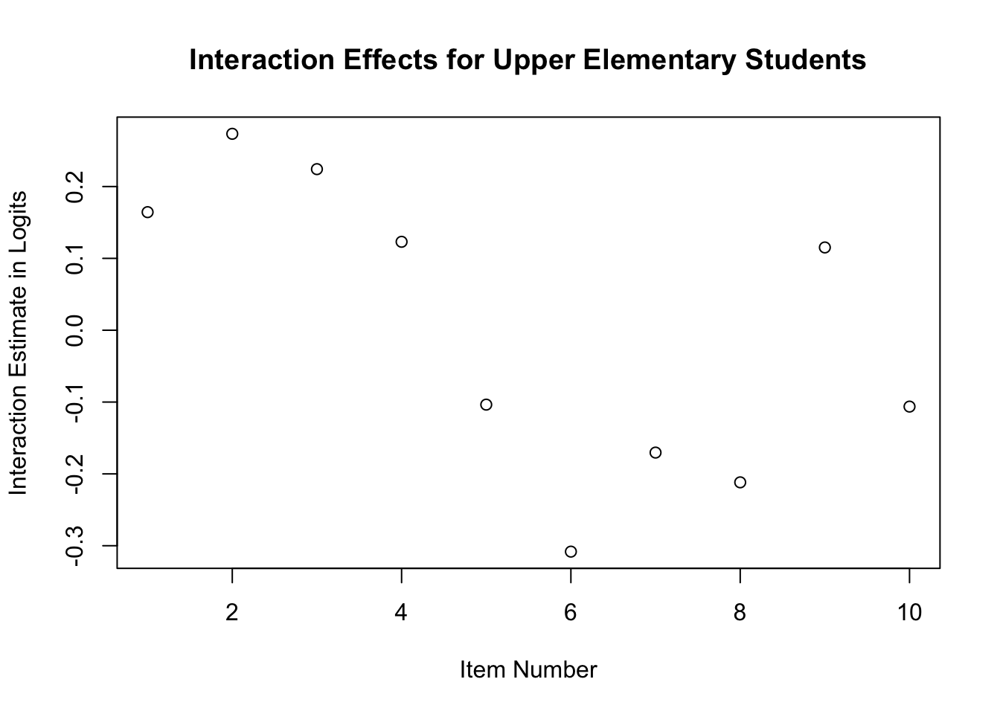
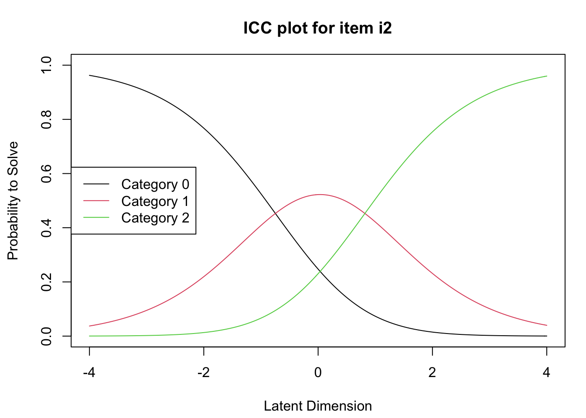
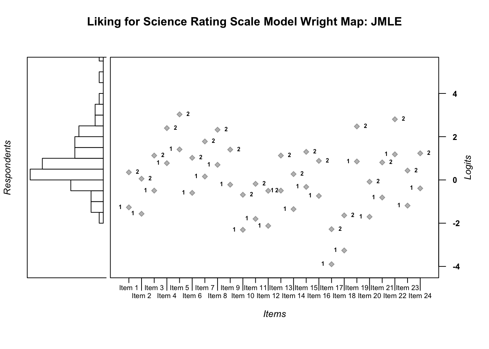

Chapter 4 Rating Scale Model
This chapter provides a basic overview of the Rasch Rating Scale Model (RSM) (Andrich 1978), along with guidance for analyzing data with the RSM using R (R Core Team 2019). We use an example data set that includes participant responses to an attitude survey to illustrate the analysis using Conditional Maximum Likelihood Estimation (CMLE) via the eRm package (Mair, Hatzinger, and Maier 2021). We also demonstrate RSM analyses using Marginal Maximum Likelihood Estimation (MMLE) and Joint Maximum Likelihood Estimation (JMLE) via the TAM package (Robitzsch, Kiefer, and Wu 2021). After the analyses are complete, we present an example description of the results. The chapter concludes with a challenge exercise.
Overview of the Rating Scale Model
Andrich Andrich (1978) proposed the RSM (sometimes also called the Polytomous Rasch model) as an extension of the dichotomous Rasch model (see Chapter 2) for use with ordinal item responses that are scored in more than two categories (e.g., data from attitude scales or performance assessments). Like the dichotomous Rasch model, the RSM provides estimates of person locations and item locations on a log-odds scale that represents the latent variable. The RSM also provides estimates of rating scale category thresholds that reflect the difficulty associated with each pair of adjacent categories in the rating scale. Specifically, the RSM specifies the probability for a rating in category k rather than in category k - 1 as a function of the difference between person locations, item locations, and the location of the rating scale category threshold for category k on the logit scale.
The RSM can be stated in log-odds form as follows:
\[\begin{equation}\tag{4.1} ln\left[\frac{P_{n_i(x=k)}}{P_{n_i(x=k-1)}}\right]=\theta_{n}-\delta_{i}-\tau_{k} \end{equation}\]
In the RSM, \(\theta\) is the person’s ability, \(\delta\) is the item’s difficulty, and \(\tau\) is the rating scale category threshold. In the RSM, the threshold is the location on the logit scale at which there is an equal probability for a rating in category \(k\) and category \(k - 1\). For a rating scale made up of \(m\) categories, there are \(m - 1\) rating scale category thresholds.
The RSM produces one common set of rating scale category thresholds that apply to all of the items in the analysis. As a result, the RSM requires that the responses to all of the items include observations in the same categories. In addition, this common set of thresholds implies that the rating scale categories have a consistent interpretation across items. For example, for items with a four-category rating scale where 0 = Strongly Disagree, 1 = Disagree, 2 = Agree, and 3 = Strongly Agree, the RSM would produce a common set of three thresholds for all of the items. This common set of thresholds implies that the difference in the level of the latent variable required to provide a rating of Strongly Agree and Agree is the same for all of the items included in the analysis.
Rating Scale Model Requirements
Because it is a Rasch model, the RSM is based on the same requirements of unidimensionality, local independence, and invariance that we discussed in Chapter 2 for the dichotomous Rasch model. Evidence that rating scale responses approximate these requirements provides support for the meaningful interpretation and use of person, item, and threshold estimates on the logit scale as indicators of their respective on the latent variable. In practice, many analysts evaluate some or all of these requirements using various indicators of model-data fit. In the current chapter, we provide code for calculating some popular residual-based fit indices for items and persons. Readers can use the same techniques that we considered in Chapter 3 to evaluate fit to the RSM. In addition, readers can use rating scale analysis techniques to consider additional issues related to rating scale functioning; we discuss these methods in detail in next Chapter.
4.1 Example Data: Liking for Science
The example data for this chapter is a group of 75 children’s responses to the 25-item Liking for Science questionnaire, which was designed to measure their attitudes toward science activities. The data were published in Wright and Masters (1982). Each item stem included a science activity, and three response options: 0 = Dislike, 1 = Not Sure/Don’t Care, and 2 = Like, such that responses in higher categories indicated more-favorable attitudes toward science activities.
4.2 RSM Analysis with CMLE in eRm
In the next section, we provide a step-by-step demonstration of a RSM analysis using the Extended Rasch Modeling, or eRm package (Mair, Hatzinger, and Maier 2021), which uses Conditional Maximum Likelihood Estimation (CMLE). We encourage readers to use the example data set that is provided in the online supplement to conduct the analysis along with us.
Prepare for the Analyses
We selected eRm for the first illustration in the current chapter because it includes functions for applying the RSM that are relatively straightforward to use and interpret. Please note that the eRm package uses the Conditional Maximum Likelihood Estimation (CMLE) method to estimate Rasch model parameters. As a result, estimates from the eRm package are not directly comparable to estimates obtained using other estimation methods.
To get started with the eRm package, view the citation information, and then install and load it into your R environment using the following code.
citation("eRm")
# install.packages("eRm")
library("eRm")Now that we have installed and loaded the packages to our R session, we are ready to import the data. We will use the function read.csv() to import the comma-separated values (.csv) file that contains the Liking for Science survey data. We encourage readers to use their preferred method for importing data files into R or R Studio.
Please note that if you use read.csv() you will need to specify the file path to the location at which the data file is stored on your computer or set your working directory to the folder in which you have saved the data.
First, we will import the data using read.csv() and store it in an object called science.
science <- read.csv("liking_for_science.csv")Next, we will explore the data using descriptive statistics using the summary() function.
summary(science)## student i1 i2 i3
## Min. : 1.0 Min. :0.000 Min. :0.000 Min. :0.000
## 1st Qu.:19.5 1st Qu.:1.000 1st Qu.:1.000 1st Qu.:1.000
## Median :38.0 Median :1.000 Median :2.000 Median :1.000
## Mean :38.0 Mean :1.453 Mean :1.547 Mean :1.173
## 3rd Qu.:56.5 3rd Qu.:2.000 3rd Qu.:2.000 3rd Qu.:2.000
## Max. :75.0 Max. :2.000 Max. :2.000 Max. :2.000
## i4 i5 i6 i7
## Min. :0.0000 Min. :0.0000 Min. :0.000 Min. :0.00
## 1st Qu.:0.0000 1st Qu.:0.0000 1st Qu.:1.000 1st Qu.:0.00
## Median :1.0000 Median :0.0000 Median :1.000 Median :1.00
## Mean :0.6933 Mean :0.4933 Mean :1.213 Mean :0.92
## 3rd Qu.:1.0000 3rd Qu.:1.0000 3rd Qu.:2.000 3rd Qu.:1.50
## Max. :2.0000 Max. :2.0000 Max. :2.000 Max. :2.00
## i8 i9 i10 i11 i12
## Min. :0.00 Min. :0.000 Min. :0.000 Min. :0.000 Min. :1.000
## 1st Qu.:0.00 1st Qu.:0.000 1st Qu.:2.000 1st Qu.:1.000 1st Qu.:2.000
## Median :1.00 Median :1.000 Median :2.000 Median :2.000 Median :2.000
## Mean :0.72 Mean :1.067 Mean :1.733 Mean :1.613 Mean :1.827
## 3rd Qu.:1.00 3rd Qu.:2.000 3rd Qu.:2.000 3rd Qu.:2.000 3rd Qu.:2.000
## Max. :2.00 Max. :2.000 Max. :2.000 Max. :2.000 Max. :2.000
## i13 i14 i15 i16 i17
## Min. :0.000 Min. :0.000 Min. :0.00 Min. :0.000 Min. :0.000
## 1st Qu.:2.000 1st Qu.:1.000 1st Qu.:1.00 1st Qu.:1.000 1st Qu.:1.000
## Median :2.000 Median :1.000 Median :2.00 Median :1.000 Median :1.000
## Mean :1.693 Mean :1.173 Mean :1.48 Mean :1.107 Mean :1.267
## 3rd Qu.:2.000 3rd Qu.:2.000 3rd Qu.:2.00 3rd Qu.:2.000 3rd Qu.:2.000
## Max. :2.000 Max. :2.000 Max. :2.00 Max. :2.000 Max. :2.000
## i18 i19 i20 i21
## Min. :0.000 Min. :0.00 Min. :0.0000 Min. :0.000
## 1st Qu.:2.000 1st Qu.:2.00 1st Qu.:0.0000 1st Qu.:1.000
## Median :2.000 Median :2.00 Median :1.0000 Median :2.000
## Mean :1.933 Mean :1.88 Mean :0.6667 Mean :1.587
## 3rd Qu.:2.000 3rd Qu.:2.00 3rd Qu.:1.0000 3rd Qu.:2.000
## Max. :2.000 Max. :2.00 Max. :2.0000 Max. :2.000
## i22 i23 i24 i25
## Min. :0.000 Min. :0.00 Min. :0.000 Min. :0.000
## 1st Qu.:1.000 1st Qu.:0.00 1st Qu.:1.000 1st Qu.:1.000
## Median :1.000 Median :0.00 Median :2.000 Median :1.000
## Mean :1.293 Mean :0.56 Mean :1.427 Mean :1.133
## 3rd Qu.:2.000 3rd Qu.:1.00 3rd Qu.:2.000 3rd Qu.:2.000
## Max. :2.000 Max. :2.00 Max. :2.000 Max. :2.000From the summary of science, we can see there are no missing data. We can also get a general sense of the scales, range, and distribution of each variable in the data set.
We can see that Student ID numbers range from 1 to 75, and that the maximum rating on the items was x = 2. Importantly, we can see that for item 12, the minimum rating was x = 1, and no ratings in the first category (x = 0) were observed in our sample. To use the RSM with these data, we will need to omit item 12 from our analysis. We will revisit these data in Chapter 5, where we include item 12 in a Partial Credit Model analysis. For now, we will create a new object called science_drop_i12 that includes the Liking for Science data without item 12.
science_drop_i12 <- subset(science, select = -i12)Run the Rating Scale Model
Next we need to isolate the item response matrix from the descriptive variables in the data (in this case, student IDs). To do this, we will create an object made up of only the item responses by removing the first variable (student) from the data.
science.responses <- subset(science_drop_i12, select = -student)We will use summary() to calculate descriptive statistics for the science.responses object to check our work and ensure that the responses are ready for analysis:
summary(science.responses)## i1 i2 i3 i4
## Min. :0.000 Min. :0.000 Min. :0.000 Min. :0.0000
## 1st Qu.:1.000 1st Qu.:1.000 1st Qu.:1.000 1st Qu.:0.0000
## Median :1.000 Median :2.000 Median :1.000 Median :1.0000
## Mean :1.453 Mean :1.547 Mean :1.173 Mean :0.6933
## 3rd Qu.:2.000 3rd Qu.:2.000 3rd Qu.:2.000 3rd Qu.:1.0000
## Max. :2.000 Max. :2.000 Max. :2.000 Max. :2.0000
## i5 i6 i7 i8 i9
## Min. :0.0000 Min. :0.000 Min. :0.00 Min. :0.00 Min. :0.000
## 1st Qu.:0.0000 1st Qu.:1.000 1st Qu.:0.00 1st Qu.:0.00 1st Qu.:0.000
## Median :0.0000 Median :1.000 Median :1.00 Median :1.00 Median :1.000
## Mean :0.4933 Mean :1.213 Mean :0.92 Mean :0.72 Mean :1.067
## 3rd Qu.:1.0000 3rd Qu.:2.000 3rd Qu.:1.50 3rd Qu.:1.00 3rd Qu.:2.000
## Max. :2.0000 Max. :2.000 Max. :2.00 Max. :2.00 Max. :2.000
## i10 i11 i13 i14 i15
## Min. :0.000 Min. :0.000 Min. :0.000 Min. :0.000 Min. :0.00
## 1st Qu.:2.000 1st Qu.:1.000 1st Qu.:2.000 1st Qu.:1.000 1st Qu.:1.00
## Median :2.000 Median :2.000 Median :2.000 Median :1.000 Median :2.00
## Mean :1.733 Mean :1.613 Mean :1.693 Mean :1.173 Mean :1.48
## 3rd Qu.:2.000 3rd Qu.:2.000 3rd Qu.:2.000 3rd Qu.:2.000 3rd Qu.:2.00
## Max. :2.000 Max. :2.000 Max. :2.000 Max. :2.000 Max. :2.00
## i16 i17 i18 i19
## Min. :0.000 Min. :0.000 Min. :0.000 Min. :0.00
## 1st Qu.:1.000 1st Qu.:1.000 1st Qu.:2.000 1st Qu.:2.00
## Median :1.000 Median :1.000 Median :2.000 Median :2.00
## Mean :1.107 Mean :1.267 Mean :1.933 Mean :1.88
## 3rd Qu.:2.000 3rd Qu.:2.000 3rd Qu.:2.000 3rd Qu.:2.00
## Max. :2.000 Max. :2.000 Max. :2.000 Max. :2.00
## i20 i21 i22 i23
## Min. :0.0000 Min. :0.000 Min. :0.000 Min. :0.00
## 1st Qu.:0.0000 1st Qu.:1.000 1st Qu.:1.000 1st Qu.:0.00
## Median :1.0000 Median :2.000 Median :1.000 Median :0.00
## Mean :0.6667 Mean :1.587 Mean :1.293 Mean :0.56
## 3rd Qu.:1.0000 3rd Qu.:2.000 3rd Qu.:2.000 3rd Qu.:1.00
## Max. :2.0000 Max. :2.000 Max. :2.000 Max. :2.00
## i24 i25
## Min. :0.000 Min. :0.000
## 1st Qu.:1.000 1st Qu.:1.000
## Median :2.000 Median :1.000
## Mean :1.427 Mean :1.133
## 3rd Qu.:2.000 3rd Qu.:2.000
## Max. :2.000 Max. :2.000Now, we are ready to run the RSM on the Liking for Science response data. We will use the RSM() function to run the model and store the results in an object called RSM.science.
RSM.science <- RSM(science.responses, se = TRUE)Overall Model Summary
Next, we will request a summary of the model results using the summary() function.
summary(RSM.science)##
## Results of RSM estimation:
##
## Call: RSM(X = science.responses, se = TRUE)
##
## Conditional log-likelihood: -1162.281
## Number of iterations: 22
## Number of parameters: 24
##
## Item (Category) Difficulty Parameters (eta): with 0.95 CI:
## Estimate Std. Error lower CI upper CI
## i2 -0.748 0.210 -1.159 -0.337
## i3 0.319 0.184 -0.041 0.679
## i4 1.578 0.199 1.188 1.968
## i5 2.210 0.223 1.772 2.648
## i6 0.215 0.185 -0.147 0.577
## i7 0.966 0.186 0.601 1.330
## i8 1.502 0.197 1.116 1.888
## i9 0.591 0.183 0.232 0.950
## i10 -1.491 0.253 -1.986 -0.996
## i11 -0.983 0.221 -1.416 -0.551
## i13 -1.306 0.240 -1.776 -0.836
## i14 0.319 0.184 -0.041 0.679
## i15 -0.533 0.201 -0.927 -0.138
## i16 0.489 0.183 0.131 0.848
## i17 0.075 0.186 -0.291 0.440
## i18 -3.104 0.452 -3.990 -2.217
## i19 -2.455 0.349 -3.139 -1.771
## i20 1.656 0.201 1.261 2.050
## i21 -0.886 0.216 -1.309 -0.463
## i22 0.003 0.187 -0.364 0.371
## i23 1.984 0.213 1.566 2.402
## i24 -0.371 0.196 -0.756 0.013
## i25 0.421 0.183 0.062 0.780
## Cat 2 1.566 0.133 1.304 1.828
##
## Item Easiness Parameters (beta) with 0.95 CI:
## Estimate Std. Error lower CI upper CI
## beta i1.c1 0.451 0.199 0.062 0.840
## beta i1.c2 -0.664 0.409 -1.466 0.137
## beta i2.c1 0.748 0.210 0.337 1.159
## beta i2.c2 -0.071 0.426 -0.905 0.764
## beta i3.c1 -0.319 0.184 -0.679 0.041
## beta i3.c2 -2.203 0.396 -2.979 -1.428
## beta i4.c1 -1.578 0.199 -1.968 -1.188
## beta i4.c2 -4.722 0.447 -5.597 -3.847
## beta i5.c1 -2.210 0.223 -2.648 -1.772
## beta i5.c2 -5.986 0.499 -6.963 -5.009
## beta i6.c1 -0.215 0.185 -0.577 0.147
## beta i6.c2 -1.996 0.395 -2.771 -1.221
## beta i7.c1 -0.966 0.186 -1.330 -0.601
## beta i7.c2 -3.498 0.412 -4.306 -2.689
## beta i8.c1 -1.502 0.197 -1.888 -1.116
## beta i8.c2 -4.570 0.441 -5.436 -3.705
## beta i9.c1 -0.591 0.183 -0.950 -0.232
## beta i9.c2 -2.749 0.400 -3.533 -1.964
## beta i10.c1 1.491 0.253 0.996 1.986
## beta i10.c2 1.416 0.501 0.433 2.398
## beta i11.c1 0.983 0.221 0.551 1.416
## beta i11.c2 0.401 0.444 -0.470 1.271
## beta i13.c1 1.306 0.240 0.836 1.776
## beta i13.c2 1.046 0.478 0.110 1.982
## beta i14.c1 -0.319 0.184 -0.679 0.041
## beta i14.c2 -2.203 0.396 -2.979 -1.428
## beta i15.c1 0.533 0.201 0.138 0.927
## beta i15.c2 -0.501 0.413 -1.310 0.308
## beta i16.c1 -0.489 0.183 -0.848 -0.131
## beta i16.c2 -2.545 0.398 -3.325 -1.765
## beta i17.c1 -0.075 0.186 -0.440 0.291
## beta i17.c2 -1.715 0.396 -2.491 -0.940
## beta i18.c1 3.104 0.452 2.217 3.990
## beta i18.c2 4.641 0.896 2.885 6.397
## beta i19.c1 2.455 0.349 1.771 3.139
## beta i19.c2 3.344 0.690 1.992 4.695
## beta i20.c1 -1.656 0.201 -2.050 -1.261
## beta i20.c2 -4.877 0.452 -5.763 -3.991
## beta i21.c1 0.886 0.216 0.463 1.309
## beta i21.c2 0.206 0.436 -0.648 1.061
## beta i22.c1 -0.003 0.187 -0.371 0.364
## beta i22.c2 -1.573 0.396 -2.349 -0.796
## beta i23.c1 -1.984 0.213 -2.402 -1.566
## beta i23.c2 -5.535 0.478 -6.472 -4.598
## beta i24.c1 0.371 0.196 -0.013 0.756
## beta i24.c2 -0.824 0.406 -1.619 -0.029
## beta i25.c1 -0.421 0.183 -0.780 -0.062
## beta i25.c2 -2.409 0.397 -3.187 -1.631The summary of the RSM output includes the Conditional Log-likelihood statistic, details about the number of iterations and model parameters, and a table with item parameters, their standard errors, and confidence intervals. It is important to note that the item parameters included in this preliminary output are item easiness parameters–not item difficulty parameters. We will examine item difficulty parameters in detail later in our analysis.
Wright Map
Next, we will create a Wright Map (see Chapter 2) from our model results. This display will provide us with an overview of the distribution of person, item, and threshold parameters. We will create the plot using the eRm package function plotPImap() on the model object RSM.science.
plotPImap(RSM.science, main = "Liking for Science Rating Scale Model Wright Map")
In this Wright Map display, the results from the RSM analysis of the Liking for Science data are summarized graphically. The figure is organized as follows.
Starting at the bottom of the figure, the horizontal axis (labeled Latent Dimension) is the logit scale that represents the latent variable. In the application of the Liking for Science data, lower numbers indicate less-favorable attitudes toward science activities, and higher numbers indicate more-favorable attitudes toward science activities.
The central panel of the figure shows item difficulty locations on the logit scale for the 24 Liking for Science items that were included in the analysis; the y-axis for this panel shows the item labels. By default in eRm, the items are ordered according to their original order in the response matrix. The items can be ordered by difficulty by adding “sorted = TRUE” as an argument in the plotPImap() call. For each item, a solid circle plotting symbol shows the overall location estimate. This solid circle symbol is connected to two open-circle symbols that show the locations of the rating scale category thresholds. Each threshold is labeled with a “1” to indicate the threshold between rating scale category x = 0 and x = 1, or a “2” to indicate the threshold between rating scale category x = 1 and x = 2.
The upper panel of the figure shows a histogram of person (in this case, children) location estimates on the logit scale. Small vertical lines on the x-axis of this histogram show the points on the logit scale at which information (variance) is maximized for the sample of persons and items in the analysis. These lines can be omitted by adding irug = FALSE as an argument in the plotPImap() call.
Item Parameters
Next, we will examine the item difficulty location and rating scale category threshold estimates. The eRm package provides several options with which analysts can find and examine item and rating scale category threshold parameters. For example, one way to obtain the overall item location parameters (\(\delta\)) is to extract the eta parameters from the model object using the $ operator. We extract these parameters, print them to the console, and calculate summary statistics for them with the following code.
item.locations <- RSM.science$etapar
item.locations## i2 i3 i4 i5 i6 i7
## -0.747716237 0.318637705 1.578076249 2.209910144 0.214960484 0.965680071
## i8 i9 i10 i11 i13 i14
## 1.502096325 0.591198710 -1.490900062 -0.983450547 -1.306083786 0.318637700
## i15 i16 i17 i18 i19 i20
## -0.532510932 0.489411243 0.074568234 -3.103553567 -2.454966823 1.655551546
## i21 i22 i23 i24 i25 Cat 2
## -0.886223768 0.003185124 1.984230774 -0.371230973 0.421330341 1.566148493summary(item.locations)## Min. 1st Qu. Median Mean 3rd Qu. Max.
## -3.10355 -0.78234 0.26680 0.08404 1.09978 2.20991Because of the nature of the estimation process used in eRm, the item.locations object that we just created does not include the location estimate for the first item. One can calculate the location for item 1 by subtracting the sum of the item locations from zero. In the following code, we find the location for item 1, and then create a new object with all 24 item locations.
n.items <- ncol(science.responses)
i1 <- 0 - sum(item.locations[1:(n.items - 1)])
item.locations.all <- c(i1, item.locations[c(1:(n.items - 1))])
item.locations.all## i2 i3 i4 i5 i6
## -0.450837954 -0.747716237 0.318637705 1.578076249 2.209910144 0.214960484
## i7 i8 i9 i10 i11 i13
## 0.965680071 1.502096325 0.591198710 -1.490900062 -0.983450547 -1.306083786
## i14 i15 i16 i17 i18 i19
## 0.318637700 -0.532510932 0.489411243 0.074568234 -3.103553567 -2.454966823
## i20 i21 i22 i23 i24 i25
## 1.655551546 -0.886223768 0.003185124 1.984230774 -0.371230973 0.421330341Alternatively, one can apply the thresholds() function to the model object in order to find the item locations from the RSM. This procedure provides item location estimates (\(\delta\) as well as estimates of the item location combined with rating scale category thresholds (\) + $). However, the values produced with this function are not centered at zero logits, so a little manipulation is required to obtain the centered values. In the following code chunk, we apply the thresholds() function to obtain the uncentered item location estimates and then calculate centered item locations.
# Apply thresholds() function to the model object in order to obtain item locations (not centered at zero logits):
items.and.taus <- thresholds(RSM.science)
items.and.taus.table <- as.data.frame(items.and.taus$threshtable)
uncentered.item.locations <- items.and.taus.table$X1.Location
# Set the mean of the item locations to zero logits:
centered.item.locations <- scale(uncentered.item.locations, scale = FALSE)
summary(centered.item.locations)## V1
## Min. :-3.1036
## 1st Qu.:-0.7823
## Median : 0.1448
## Mean : 0.0000
## 3rd Qu.: 0.6848
## Max. : 2.2099In addition, the eta parameters from the RSM object include cumulative rating scale category thresholds, printed after the final item location estimate. In our example, this value is labeled “Cat 2.” Cumulative thresholds are not typically used in Rasch model applications; Rasch-Andrich (i.e., adjacent categories) thresholds are typically used instead (Andrich 2015; Mellenbergh 1995). We will calculate the values of the rating scale category thresholds using the results from the thresholds() function. This function produced estimates of the rating scale category thresholds combined with item difficulty parameter estimates. We can subtract these values from the item locations to find the values of each threshold.
In our example, we have a rating scale with three categories, so we have two rating scale category thresholds. In the following code chunk, we create an empty object in which to store the threshold estimates (tau.estimates), and then we use a for-loop to calculate the estimates and store them in our object. Because the thresholds are the same for all of the items, we will save the first value from vector of differences between the item+threshold locations and the overall locations.
# Specify the number of thresholds as the maximum observed score in the response matrix (be sure the responses begin at category 0):
n.thresholds <- max(science.responses)
# Calculate adjacent-category threshold values:
tau.estimates <- NULL
tau <- 1
for(tau in 1:n.thresholds){
tau.estimates[tau] <- (items.and.taus.table[, (1+tau)] - items.and.taus.table[,1])[1]
}Next, we will calculate standard errors for each item and threshold location and store them in new objects. We will use summary() to examine descriptive statistics for these values.
#SE for items + thresholds:
delta.tau.se <- items.and.taus$se.thresh
summary(delta.tau.se)## Min. 1st Qu. Median Mean 3rd Qu. Max.
## 0.1831 0.1989 0.2303 0.2379 0.2459 0.4535# SE for overall item:
delta.se <- RSM.science$se.eta
summary(delta.se)## Min. 1st Qu. Median Mean 3rd Qu. Max.
## 0.1335 0.1844 0.1980 0.2153 0.2172 0.4524Item Response Functions
We will examine graphical displays of item difficulty using item response functions. With the RSM, the eRm package creates plots of the probability for a rating in each rating scale category, conditional on person locations on the latent variable. In the following code, we use plotICC() from eRm to create rating scale category probability plots for the 24 items in our analysis. We included ask = FALSE in our function call in order to generate all of the plots at once. For brevity, we have only included plots for the first three items in this book. The specific items to be plotted can be controlled by changing the items included in the items.to.plot object.
items.to.plot <- c(1:3)
plotICC(RSM.science, ask = FALSE, item.subset = items.to.plot)
This code generates plots of rating scale category probabilities for each item. In each item-specific plot, the x-axis is the logit scale that represents the latent variable; this scale represents favorability toward science activities in our example. The y-axis is the probability for a rating in each category, conditional on person locations on the latent variable. Separate lines in different colors show the conditional probability for each category of responses observed for the item of interest. Because we used the RSM, the overall shape of the curves and the relative distance between the curves is consistent across items–reflecting the common set of rating scale category thresholds. However, the location of the curves on the logit scale shifts across the individual items–reflecting each item’s unique overall difficulty location (\(\delta\)).
Person Parameters and Item Fit
In the eRm package, it is necessary to calculate person parameters before item fit statistics can be calculated. Accordingly, we will proceed with a brief examination of person parameters before we conduct item fit analyses. In practice, we recommend examining item fit before examining and interpreting item locations in detail.
Examine Person Parameters
The next step in our analysis is to calculate and examine person location parameters (i.e., person achievement or ability estimates). With the CMLE method that is used in eRm, person parameters are calculated after the item locations are estimated.
In the following code, we calculate person locations that correspond to our model using the person.parameter() function with the RSM model object (RSM.science). This function also produces standard errors for the person locations. We stored the person location estimates and their standard errors in a new data frame called person.locations, and then requested a summary of the estimation results using summary().
# Calculate person parameters:
person.locations.estimate <- person.parameter(RSM.science)
# Store person parameters and their standard errors in a dataframe object:
person.locations <- cbind.data.frame(person.locations.estimate$thetapar,
person.locations.estimate$se.theta)
names(person.locations) <- c("theta", "SE")
# View summary statistics for person parameters:
summary(person.locations)## theta SE
## Min. :-0.8248 Min. :0.3362
## 1st Qu.: 0.8173 1st Qu.:0.3377
## Median : 1.3296 Median :0.3474
## Mean : 1.5669 Mean :0.3819
## 3rd Qu.: 2.2379 3rd Qu.:0.3768
## Max. : 5.3886 Max. :1.0285The estimation procedure in eRm does not directly produce parameter estimates for persons with extreme scores. In our example, extreme scores would result from a child giving a response of x = 0 to all items or a child giving a response of x = 2 to all items. For these students, a standard error is not calculated. In our example, Child #2 had an extreme score because they gave a rating in category 2 to all items.
Examine Item Fit
Next, we will conduct a brief exploration of item fit statistics for the Liking for Science items. We considered item fit in detail in Chapter 3; readers can use the same procedures in that chapter to examine item fit in detail for the RSM.
To calculate numeric item fit statistics, we will use the function itemfit() from eRm on the person parameter object (person.locations.estimate). This function produces several item fit statistics, including infit mean square error (MSE), outfit MSE, and standardized infit and outfit MSE statistics. We will store the item fit results in a new object called item.fit, and then format this object as a data.frame object for easy manipulation and exporting.
item.fit.results <- itemfit(person.locations.estimate)
item.fit <- cbind.data.frame(item.fit.results$i.infitMSQ,
item.fit.results$i.outfitMSQ,
item.fit.results$i.infitZ,
item.fit.results$i.outfitZ)
names(item.fit) <- c("infit_MSE", "outfit_MSE", "std_infit", "std_outfit")Next, we will request a summary of the numeric item fit statistics using summary().
summary(item.fit)## infit_MSE outfit_MSE std_infit std_outfit
## Min. :0.5296 Min. :0.4734 Min. :-3.8138 Min. :-3.2246
## 1st Qu.:0.7671 1st Qu.:0.6360 1st Qu.:-1.6470 1st Qu.:-1.6652
## Median :0.8614 Median :0.7457 Median :-0.9102 Median :-1.0783
## Mean :0.9968 Mean :1.0492 Mean :-0.4152 Mean :-0.1794
## 3rd Qu.:1.0764 3rd Qu.:1.0533 3rd Qu.: 0.5623 3rd Qu.: 0.3292
## Max. :2.3164 Max. :3.7723 Max. : 5.9898 Max. : 8.4184The item.fit object includes mean square error (MSE) and standardized (Z) versions of the Outfit and Infit statistics for each item included in the analysis.These statistics are summaries of the residuals associated with each item. When data fit Rasch model expectations, the MSE versions of Outfit and Infit are expected to be close to 1.00 and the standardized versions of Outfit and Infit are expected to be around 0.00. Please refer to Chapter 3 for a more-detailed discussion of item fit.
Then, we calculate the reliability of separation statistics using the similar code we mentioned in the Chapter 3.
## Person separation reliability
person.separation.reliability <- SepRel(person.locations.estimate)
person.separation.reliability## Separation Reliability: 0.8874## Item separation reliability:
# Get Item scores
ItemScores <- colSums(science.responses)
# Get Item SD
ItemSD <- apply(science.responses,2,sd)
# Calculate the se of the Item
ItemSE <- ItemSD/sqrt(length(ItemSD))
# compute the Observed Variance (also known as Total Person Variability or Squared Standard Deviation)
SSD.ItemScores <- var(ItemScores)
# compute the Mean Square Measurement error (also known as Model Error variance)
Item.MSE <- sum((ItemSE)^2) / length(ItemSE)
# compute the Item Separation Reliability
item.separation.reliability <- (SSD.ItemScores-Item.MSE) / SSD.ItemScores
item.separation.reliability## [1] 0.9999806Person Fit
Next, we will conduct a brief exploration of person fit statistics. To calculate numeric person fit statistics, we will use the function personfit() from eRm on the person parameter object (person.locations.estimate). This function produces several person fit statistics, including infit mean square error (MSE), outfit MSE, and standardized infit and outfit MSE statistics. We will store the person fit results in a new object called person.fit, and then format this object as a dataframe for easier manipulation and exporting.
person.fit.results <- personfit(person.locations.estimate)
person.fit <- cbind.data.frame(person.fit.results$p.infitMSQ,
person.fit.results$p.outfitMSQ,
person.fit.results$p.infitZ,
person.fit.results$p.outfitZ)
names(person.fit) <- c("infit_MSE", "outfit_MSE", "std_infit", "std_outfit")Next, we will request a summary of the numeric person fit statistics using the summary() function.
summary(person.fit)## infit_MSE outfit_MSE std_infit std_outfit
## Min. :0.2754 Min. :0.2179 Min. :-4.0391 Min. :-3.1064
## 1st Qu.:0.6635 1st Qu.:0.5470 1st Qu.:-1.2749 1st Qu.:-1.0372
## Median :0.8496 Median :0.7221 Median :-0.3387 Median :-0.4563
## Mean :0.9588 Mean :1.0492 Mean :-0.2829 Mean : 0.0243
## 3rd Qu.:1.0851 3rd Qu.:1.1367 3rd Qu.: 0.3712 3rd Qu.: 0.5296
## Max. :3.0474 Max. :4.8182 Max. : 5.1958 Max. : 6.6751The person.fit object includes mean square error (MSE) and standardized (Z) versions of the Outfit and Infit statistics for each person. These statistics are summaries of the residuals associated with each person. When data fit Rasch model expectations, the MSE versions of Outfit and Infit are expected to be close to 1.00 and the standardized versions of Outfit and Infit are expected to be around 0.00. Please refer to Chapter 3 for a more-detailed discussion of person fit.
Summarize the Results in Tables
As a final step, we will create tables that summarize the calibrations of the persons, items, and rating scale category thresholds.
Table 1 is an overall model summary table that provides an overview of the logit scale locations, standard errors, fit statistics, and reliability statistics for items and persons. This type of table is useful for reporting the results from Rasch model analyses because it provides a quick overview of the location estimates and numeric model-data fit statistics for the items and persons in the analysis.
RSM_summary.table.statistics <- c("Logit Scale Location Mean",
"Logit Scale Location SD",
"Standard Error Mean",
"Standard Error SD",
"Outfit MSE Mean",
"Outfit MSE SD",
"Infit MSE Mean",
"Infit MSE SD",
"Std. Outfit Mean",
"Std. Outfit SD",
"Std. Infit Mean",
"Std. Infit SD",
"Separation.reliability")
RSM_item.summary.results <- rbind(mean(centered.item.locations),
sd(centered.item.locations),
mean(delta.se),
sd(delta.se),
mean(item.fit.results$i.outfitMSQ),
sd(item.fit.results$i.outfitMSQ),
mean(item.fit.results$i.infitMSQ),
sd(item.fit.results$i.infitMSQ),
mean(item.fit.results$i.outfitZ),
sd(item.fit.results$i.outfitZ),
mean(item.fit.results$i.infitZ),
sd(item.fit.results$i.infitZ),
item.separation.reliability)
RSM_person.summary.results <- rbind(mean(person.locations$theta),
sd(person.locations$theta),
mean(person.locations$SE),
sd(person.locations$SE),
mean(person.fit$outfit_MSE),
sd(person.fit$outfit_MSE),
mean(person.fit$infit_MSE),
sd(person.fit$infit_MSE),
mean(person.fit$std_outfit),
sd(person.fit$std_outfit),
mean(person.fit$std_infit),
sd(person.fit$std_infit),
as.numeric(person.separation.reliability))
# Round the values for presentation in a table:
RSM_item.summary.results_rounded <- round(RSM_item.summary.results, digits = 2)
RSM_person.summary.results_rounded <- round(RSM_person.summary.results, digits = 2)
RSM_Table1 <- cbind.data.frame(RSM_summary.table.statistics,
RSM_item.summary.results_rounded,
RSM_person.summary.results_rounded)
# add descriptive column labels:
names(RSM_Table1) <- c("Statistic", "Items", "Persons")
RSM_Table1## Statistic Items Persons NA NA
## X Logit Scale Location Mean 0.00 1.57 1.57 1.57
## X.1 Logit Scale Location SD 1.33 1.18 1.18 1.18
## X.2 Standard Error Mean 0.22 0.38 0.38 0.38
## X.3 Standard Error SD 0.06 0.10 0.10 0.10
## X.4 Outfit MSE Mean 1.05 1.05 1.05 1.05
## X.5 Outfit MSE SD 0.82 0.99 0.99 0.99
## X.6 Infit MSE Mean 1.00 0.96 0.96 0.96
## X.7 Infit MSE SD 0.45 0.49 0.49 0.49
## X.8 Std. Outfit Mean -0.18 0.02 0.02 0.02
## X.9 Std. Outfit SD 2.77 1.85 1.85 1.85
## X.10 Std. Infit Mean -0.42 -0.28 -0.28 -0.28
## X.11 Std. Infit SD 2.35 1.63 1.63 1.63
## item.separation.reliability Separation.reliability 1.00 0.89 1.39 0.16Table 2 is a table that summarizes the overall calibrations of individual items. For data sets with manageable sample sizes such as the Liking for Science data example in this chapter, we recommend reporting details about each item in a table similar to this one.
# Calculate the average rating for each item:
Avg_Rating <- apply(science.responses, 2, mean)
# Combine item calibration results in a table:
RSM_Table2 <- cbind.data.frame(c(1:ncol(science.responses)),
Avg_Rating,
centered.item.locations,
delta.se,
item.fit$outfit_MSE,
item.fit$std_outfit,
item.fit$infit_MSE,
item.fit$std_infit)
names(RSM_Table2) <- c("Task ID", "Average Rating", "Item Location","Item SE","Outfit MSE","Std. Outfit", "Infit MSE","Std. Infit")
# Sort Table 2 by Item difficulty:
RSM_Table2 <- RSM_Table2[order(-RSM_Table2$`Item Location`),]
# Round the numeric values (all columns except the first one) to 2 digits:
RSM_Table2[, -1] <- round(RSM_Table2[,-1], digits = 2)
RSM_Table2## Task ID Average Rating Item Location Item SE Outfit MSE Std. Outfit
## i5 5 0.49 2.21 0.18 3.29 6.77
## i23 22 0.56 1.98 0.20 3.77 8.42
## i20 19 0.67 1.66 0.22 1.67 3.16
## i4 4 0.69 1.58 0.22 0.86 -0.78
## i8 8 0.72 1.50 0.18 1.15 0.87
## i7 7 0.92 0.97 0.20 0.97 -0.15
## i9 9 1.07 0.59 0.25 1.13 0.81
## i16 15 1.11 0.49 0.19 0.90 -0.53
## i25 24 1.13 0.42 0.13 0.71 -1.83
## i3 3 1.17 0.32 0.20 0.52 -3.22
## i14 13 1.17 0.32 0.20 0.72 -1.65
## i6 6 1.21 0.21 0.19 0.72 -1.60
## i17 16 1.27 0.07 0.45 0.57 -2.56
## i22 21 1.29 0.00 0.21 0.72 -1.50
## i24 23 1.43 -0.37 0.18 0.77 -1.04
## i1 1 1.45 -0.45 0.21 0.48 -2.68
## i15 14 1.48 -0.53 0.18 0.62 -1.71
## i2 2 1.55 -0.75 0.18 0.71 -1.12
## i21 20 1.59 -0.89 0.19 0.64 -1.35
## i11 11 1.61 -0.98 0.24 0.47 -2.10
## i13 12 1.69 -1.31 0.18 0.93 -0.09
## i10 10 1.73 -1.49 0.22 0.56 -1.23
## i19 18 1.88 -2.45 0.20 1.03 0.25
## i18 17 1.93 -3.10 0.35 1.26 0.56
## Infit MSE Std. Infit
## i5 2.20 5.31
## i23 2.32 5.99
## i20 1.27 1.66
## i4 0.85 -0.99
## i8 1.06 0.42
## i7 0.94 -0.42
## i9 1.14 0.99
## i16 0.92 -0.53
## i25 0.76 -1.82
## i3 0.55 -3.81
## i14 0.79 -1.58
## i6 0.78 -1.67
## i17 0.63 -2.92
## i22 0.80 -1.41
## i24 0.87 -0.83
## i1 0.53 -3.65
## i15 0.76 -1.64
## i2 0.90 -0.55
## i21 0.82 -1.03
## i11 0.60 -2.64
## i13 1.20 1.02
## i10 0.77 -1.14
## i19 1.04 0.23
## i18 1.43 1.05Finally, Table 3 provides a summary of the person calibrations. When there is a relatively large person sample size, it may be more useful to present the results as they relate to individual persons or subsets of the person sample as they are relevant to the purpose of the analysis.
In our person calibration table, we have included the results for all of the children with non-extreme scores. This includes all of the children in our sample except Child #2. For brevity, we only show the first 6 rows of the person calibration table in this book.
# Calculate average rating for persons who did not have extreme scores
Person_Avg_Rating <- apply(person.locations.estimate$X.ex,1, mean)
# Combine person calibration results in a table:
RSM_Table3 <- cbind.data.frame(rownames(person.locations),
Person_Avg_Rating,
person.locations$theta,
person.locations$SE,
person.fit$outfit_MSE,
person.fit$std_outfit,
person.fit$infit_MSE,
person.fit$std_infit)
names(RSM_Table3) <- c("Child ID", "Average Rating", "Person Location","Person SE","Outfit MSE","Std. Outfit", "Infit MSE","Std. Infit")
# Round the numeric values (all columns except the first one) to 2 digits:
RSM_Table3[, -1] <- round(RSM_Table3[,-1], digits = 2)
head(RSM_Table3)## Child ID Average Rating Person Location Person SE Outfit MSE Std. Outfit
## 1 1 1.17 1.27 0.34 0.83 -0.45
## 3 3 1.33 1.75 0.35 0.40 -1.99
## 4 4 1.04 0.93 0.34 0.69 -1.03
## 5 5 0.75 0.12 0.35 1.20 0.70
## 6 6 0.92 0.59 0.34 2.36 3.44
## 7 7 1.75 3.31 0.47 1.12 0.41
## Infit MSE Std. Infit
## 1 0.93 -0.20
## 3 0.43 -2.66
## 4 0.70 -1.26
## 5 0.83 -0.58
## 6 1.57 1.99
## 7 1.80 1.814.3 RSM Analysis with MMLE in TAM
The next section of this chapter includes an illustration of RSM analyses with the Test Analysis Modules or TAM package (Robitzsch, Kiefer, and Wu 2021) with Marginal Maximum Likelihood Estimation (MMLE). After this illustration, we also demonstrate the use of TAM to estimate the RSM with Joint Maximum Likelihood Estimation (JMLE). These illustrations use the Liking for Science data set that we described earlier in this chapter.
Except where there are significant differences between the eRm and TAM procedures, we provide fewer details about the analysis procedures and interpretations in this section compared to the first illustration.
Prepare for the Analyses
To get started with the TAM package, view the citation information, and then install and load it into your R environment using the following code:
citation("TAM")
# install.packages("TAM")
library("TAM")To facilitate the example analysis, we will also use the WrightMap package (Irribarra and Freund 2014).
citation("WrightMap")
# install.packages("WrightMap")
library("WrightMap")If you have not already imported the Liking for Science data and prepared it for analysis as described earlier in this chapter by dropping item 12 and isolating the response matrix, please do so before continuing with the TAM analyses.
Run the Rating Scale Model
In order to obtain Rasch-Andrich thresholds (i.e., adjacent-categories thresholds) from our analysis, we need to generate a design matrix for the model that includes specifications for those parameters. We will do this using the designMatrices() function from TAM and save the result in a new object called design.matrix.
design.matrix <- designMatrices(resp=science.responses, modeltype="RSM", constraint = "items")$ANow we can run the RSM with our design matrix using the tam.mml() function with several specifications.
RSM.science_MMLE <- tam.mml(science.responses, irtmodel="RSM", A = design.matrix, constraint = "items", verbose = FALSE) Overall Model Summary
After we run the model, we will request a summary of the model results using the summary() function.
summary(RSM.science_MMLE)The summary of the RSM output includes details about the number of iterations, global model fit statistics, a summary of the model parameters, and several other statistics.
Item Parameters
Next, we will examine the overall item difficulty location and rating scale category threshold estimates. First, we need to extract the item location estimates from the model object (RSM.science_MMLE). The item locations are labeled as xsi parameters. We will save the overall item location parameter estimates and their standard errors for our 24 Liking for Science Items by selecting the first 24 rows of the xsi results in an object called items_MMLE.
items_MMLE <- RSM.science_MMLE$xsi[1:(ncol(science.responses)),]Next, we need to find the rating scale category threshold parameter estimates for our rating scale. In our example with the Liking for Science data, our rating scale has three categories, so there are two threshold parameters. The threshold parameters are stored in a table called item_irt within the RSM object. The first threshold is labeled tau.Cat1 and the second threshold is labeled tau.Cat2. We can see the values by printing the table to the console.
RSM.science_MMLE$item_irt## item alpha beta tau.Cat1 tau.Cat2
## 1 i1 1 -0.449669020 -0.785037 0.785037
## 2 i2 1 -0.749690219 -0.785037 0.785037
## 3 i3 1 0.326379571 -0.785037 0.785037
## 4 i4 1 1.582020472 -0.785037 0.785037
## 5 i5 1 2.199070940 -0.785037 0.785037
## 6 i6 1 0.222036480 -0.785037 0.785037
## 7 i7 1 0.974781105 -0.785037 0.785037
## 8 i8 1 1.507112830 -0.785037 0.785037
## 9 i9 1 0.600174068 -0.785037 0.785037
## 10 i10 1 -1.500765124 -0.785037 0.785037
## 11 i11 1 -0.987962778 -0.785037 0.785037
## 12 i13 1 -1.313980081 -0.785037 0.785037
## 13 i14 1 0.326379571 -0.785037 0.785037
## 14 i15 1 -0.532200128 -0.785037 0.785037
## 15 i16 1 0.498022740 -0.785037 0.785037
## 16 i17 1 0.080616226 -0.785037 0.785037
## 17 i18 1 -3.126616101 -0.785037 0.785037
## 18 i19 1 -2.473933212 -0.785037 0.785037
## 19 i20 1 1.658247677 -0.785037 0.785037
## 20 i21 1 -0.889691643 -0.785037 0.785037
## 21 i22 1 0.008649293 -0.785037 0.785037
## 22 i23 1 1.979959819 -0.785037 0.785037
## 23 i24 1 -0.369253269 -0.785037 0.785037
## 24 i25 1 0.430310783 -0.785037 0.785037The following code extracts the adjacent-categories threshold parameters from the item_irt table and stores them in an object called tau.estimates_MMLE. Because there is only one set of threshold values for the RSM, we can extract the threshold estimates for the first item, and the results are applicable to all of the items in our analysis.
# Specify the number of thresholds as the maximum observed score in the response matrix (be sure the responses begin at category 0):
n.thresholds <- max(science.responses)
## Calculate adjacent-category threshold values:
tau.estimates_MMLE <- NULL
tau.estimates_MMLE <- RSM.science_MMLE$item_irt[1, c(4: (4 + (n.thresholds - 1)))]
# Print adjacent-categories threshold estimates to the console:
tau.estimates_MMLE## tau.Cat1 tau.Cat2
## 1 -0.785037 0.785037Item Response Functions
Next, we will examine rating scale category probability plots for the items in our analysis. For brevity, we have only included plots for the first three items in this book. The specific items to be plotted can be controlled by changing the items included in the items.to.plot object.
#graphics.off()
items.to.plot <- c(1:3)
plot(RSM.science_MMLE, type="items", items = items.to.plot)## Iteration in WLE/MLE estimation 1 | Maximal change 0.882
## Iteration in WLE/MLE estimation 2 | Maximal change 0.4971
## Iteration in WLE/MLE estimation 3 | Maximal change 0.1235
## Iteration in WLE/MLE estimation 4 | Maximal change 9e-04
## Iteration in WLE/MLE estimation 5 | Maximal change 0
## ----
## WLE Reliability= 0.887


## ....................................................
## Plots exported in png format into folder:
## /Users/chenghua/Documents/GitHub/The Rasch Book/PlotsThis code generates plots of rating scale category probabilities for each item. These plots have the same interpretation as the rating scale category probability plots that we generated using eRm, where the x-axis is the logit scale that represents the latent variable, the y-axis is the probability for a rating in each category, and individual lines show the conditional probability for a rating in each category.
Item Fit
Next, we will examine numeric item fit indices using the itemfit() function from TAM. We will save the results in an object called item.fit_MMLE and then view summary statistics for the fit statistics.
MMLE_fit <- tam.fit(RSM.science_MMLE)
item.fit_MMLE <- MMLE_fit$itemfit
summary(item.fit_MMLE)As in the dichotomous Rasch model analysis with TAM (see Chapter 2), the tam.fit() function provides mean square error (MSE) and standardized (t) versions of the Outfit and Infit statistics for Rasch models. The Outfit and Infit statistics are the MSE versions and the Outfit_t and Infit_t statistics are the standardized versions of the statistics. TAM also reports a p value for the standardized fit statistics (Outfit_p and Infit_p), along with adjusted significance values (Infit_pholm and Outfit_pholm). Please see Chapter 3 for a detailed consideration of procedures for evaluating item fit in detail, including the use of graphical tools to evaluate item fit.
Person Paramters
Now we will examine person parameter estimates. With the MMLE procedure in TAM, person parameters are calculated after the item estimates using the tam.wle() function. The following code calculates person parameter estimates and saves them in an object called person.locations_MMLE.
# Use the tam.wle function to calculate person location parameters:
person.locations.estimate_MMLE <- tam.wle(RSM.science_MMLE)## Iteration in WLE/MLE estimation 1 | Maximal change 0.882
## Iteration in WLE/MLE estimation 2 | Maximal change 0.4971
## Iteration in WLE/MLE estimation 3 | Maximal change 0.1235
## Iteration in WLE/MLE estimation 4 | Maximal change 9e-04
## Iteration in WLE/MLE estimation 5 | Maximal change 0
## ----
## WLE Reliability= 0.887# Store person parameters and their standard errors in a dataframe object:
person.locations_MMLE <- cbind.data.frame(person.locations.estimate_MMLE$theta,
person.locations.estimate_MMLE$error)
names(person.locations_MMLE) <- c("theta", "SE")
# View summary statistics for person parameters:
summary(person.locations_MMLE)## theta SE
## Min. :-1.5815 Min. :0.3365
## 1st Qu.: 0.0373 1st Qu.:0.3379
## Median : 0.6006 Median :0.3472
## Mean : 0.8280 Mean :0.3921
## 3rd Qu.: 1.4708 3rd Qu.:0.3802
## Max. : 5.3850 Max. :1.4721Person Fit
We can evaluate person fit using the tam.personfit() function from TAM. This function uses the model object as an argument and it produces infit and outfit statistics, as well as standardized versions of these statistics, for each person in the response matrix.
person.fit.results_MMLE <- tam.personfit(RSM.science_MMLE)
summary(person.fit.results_MMLE)## outfitPerson outfitPerson_t infitPerson infitPerson_t
## Min. :0.02029 Min. :-3.08806 Min. :0.04679 Min. :-4.0274
## 1st Qu.:0.52565 1st Qu.:-1.04125 1st Qu.:0.65236 1st Qu.:-1.2797
## Median :0.71316 Median :-0.45831 Median :0.83053 Median :-0.4127
## Mean :0.97920 Mean :-0.04494 Mean :0.93502 Mean :-0.3221
## 3rd Qu.:1.12658 3rd Qu.: 0.50305 3rd Qu.:1.04901 3rd Qu.: 0.2676
## Max. :4.08127 Max. : 5.28727 Max. :3.04482 Max. : 5.1969Wright Map
Next, we will create a Wright Map from our model results. This display will provide us with an overview of the distribution of person, item, and threshold parameters. We will create the plot using the WrightMap package function IRT.WrightMap() on the model object (SM.science_MMLE). The following code prepares the parameter estimates and plots the Wright Map using them.
# Combine item estimates with thresholds:
n.items <- ncol(science.responses)
thresholds_MMLE <- matrix(data = NA, nrow = n.items, ncol = n.thresholds)
tau.estimates_MMLE <- as.vector(as.numeric(tau.estimates_MMLE))
for(i in 1:n.thresholds){
items.thresholds <- items_MMLE + tau.estimates_MMLE[i]
thresholds_MMLE[, i] <- items.thresholds[1:n.items, 1]
}
# Plot the Variable Map
wrightMap(thetas = person.locations_MMLE$theta,
thresholds = thresholds_MMLE,
main.title = "Liking for Science Rating Scale Model Wright Map",
show.thr.lab = TRUE, dim.names = "",
label.items.rows= 2)
## [,1] [,2]
## [1,] -1.2347060 0.33536797
## [2,] -1.5347272 0.03534678
## [3,] -0.4586574 1.11141657
## [4,] 0.7969835 2.36705747
## [5,] 1.4140339 2.98410793
## [6,] -0.5630005 1.00707347
## [7,] 0.1897441 1.75981810
## [8,] 0.7220758 2.29214982
## [9,] -0.1848629 1.38521106
## [10,] -2.2858021 -0.71572813
## [11,] -1.7729998 -0.20292578
## [12,] -2.0990171 -0.52894309
## [13,] -0.4586574 1.11141657
## [14,] -1.3172371 0.25283687
## [15,] -0.2870143 1.28305973
## [16,] -0.7044208 0.86565322
## [17,] -3.9116531 -2.34157911
## [18,] -3.2589702 -1.68889622
## [19,] 0.8732107 2.44328467
## [20,] -1.6747286 -0.10465465
## [21,] -0.7763877 0.79368629
## [22,] 1.1949228 2.76499681
## [23,] -1.1542903 0.41578373
## [24,] -1.5700740 0.00000000In this Wright Map display, the results from the RSM analysis of the Liking for Science data are summarized graphically. The figure is organized as follows:
The left panel of the plot shows a histogram of respondent (children) locations on the logit scale that represents the latent variable. Units on the logit scale are shown on the far-right axis of the plot (labeled Logits).
The large central panel of the plot shows the rating scale category threshold estimates specific to each item on the logit scale that represents the latent variable. Light grey diamond shapes show the logit scale location of the threshold estimates for each item, as labeled on the x-axis. Thresholds are labeled using tau symbols followed by an integer that shows the threshold number. In our example, \(\tau_1\) is the threshold between rating scale categories x = 0 and x = 1, and \(\tau_2\) is the threshold between rating scale categories x = 1 and x = 2.
Even though it is not appropriate to fully interpret item and person locations on the logit scale until there is evidence of acceptable model-data fit, we recommend examining the Wright Map during the preliminary stages of an item analysis to get a general sense of the model results and to identify any potential scoring or data entry errors.
A quick glance at the Wright Map suggests that, on average, the persons are located higher on the logit scale compared to the average item threshold locations. In addition, there appears to be a relatively wide spread of person and item locations on the logit scale, such that the Liking for Science questionnaire appears to be a useful tool for identifying differences in children’s attitudes toward science activities as well as the difficulty to find each of the activities as favorable.
4.4 RSM Analysis with JMLE in TAM
In the following section, we provide an illustration of RSM analyses with the Test Analysis Modules or TAM package (Robitzsch, Kiefer, and Wu 2021) with Joint Maximum Likelihood Estimation (JMLE). Except where there are significant differences between the MMLE and JMLE procedures, we provide fewer details about the analysis procedures and interpretations compared to the eRm and TAM MMLE illustrations.
Prepare for the Analyses
Before beginning the JMLE RSM analysis, please ensure that you have installed the TAM and WrightMap packages and loaded them into your working environment. In addition, please ensure that you have imported the Liking for Science data, removed item 12, and isolated the response matrix as described earlier in the chapter.
Run the Rating Scale Model
We will use the tam.jml() function to run the RSM with JMLE and store the results in an object called RSM.science_JMLE. As with the MMLE procedure, in order to obtain Rasch-Andrich thresholds (i.e., adjacent-categories thresholds), we need to generate a design matrix for the model that includes specifications for those parameters. We will do this using the designMatrices() function from TAM and save the result in a new object called design.matrix.
design.matrix <- designMatrices(resp=science.responses, modeltype="RSM", constraint = "items")$ANow we can run the RSM with our design matrix. We have also added a few other specifications to maximize the comparability of the interpretation of the results from this analysis with results from the Linacre (2020a) and Linacre (2020b) software programs.
RSM.science_JMLE <- tam.jml(science.responses, A = design.matrix, constraint = "items",control=list(maxiter=500), version=2, verbose = FALSE)Overall Model Summary
After we run the model, we will request a summary of the model results using the summary() function.
summary(RSM.science_JMLE)The summary of the RSM output includes details about the number of iterations, global model fit statistics, a summary of the model parameters, and several other statistics.
Item Parameters
Next, we will examine the item difficulty location and rating scale category threshold estimates. First, we need to extract the item location estimates from the model object (RSM.science_MMLE). The item locations are stored in the item table within the model object. The item locations are stored in the xsi.item column of this table. First, we will view the item table by printing it to the console. Then, we will save the overall item location parameter estimates in an object called items_MMLE.
RSM.science_JMLE$item## item N M xsi.item AXsi_.Cat1 AXsi_.Cat2 B.Cat1.Dim1
## i1 i1 75 1.4533333 -0.4574934878 -1.2681805 -0.914986976 1
## i2 i2 75 1.5466667 -0.7552041947 -1.5658912 -1.510408389 1
## i3 i3 75 1.1733333 0.3170099599 -0.4936770 0.634019920 1
## i4 i4 75 0.6933333 1.5859579282 0.7752710 3.171915856 1
## i5 i5 75 0.4933333 2.2217139684 1.4110270 4.443427937 1
## i6 i6 75 1.2133333 0.2124921916 -0.5981948 0.424984383 1
## i7 i7 75 0.9200000 0.9689816136 0.1582946 1.937963227 1
## i8 i8 75 0.7200000 1.5095479845 0.6988610 3.019095969 1
## i9 i9 75 1.0666667 0.5913466249 -0.2193404 1.182693250 1
## i10 i10 75 1.7333333 -1.4968099225 -2.3074969 -2.993619845 1
## i11 i11 75 1.6133333 -0.9910288297 -1.8017158 -1.982057659 1
## i13 i13 75 1.6933333 -1.3127959249 -2.1234829 -2.625591850 1
## i14 i14 75 1.1733333 0.3170099599 -0.4936770 0.634019920 1
## i15 i15 75 1.4800000 -0.5394778715 -1.3501648 -1.078955743 1
## i16 i16 75 1.1066667 0.4886897578 -0.3219972 0.977379516 1
## i17 i17 75 1.2666667 0.0710178953 -0.7396691 0.142035791 1
## i18 i18 75 1.9333333 -3.0878980651 -3.8985850 -6.175796130 1
## i19 i19 75 1.8800000 -2.4504761670 -3.2611631 -4.900952334 1
## i20 i20 75 0.6666667 1.6640135967 0.8533266 3.328027193 1
## i21 i21 75 1.5866667 -0.8938071367 -1.7044941 -1.787614273 1
## i22 i22 75 1.2933333 -0.0008840094 -0.8115710 -0.001768019 1
## i23 i23 75 0.5600000 1.9947495520 1.1840626 3.989499104 1
## i24 i24 75 1.4266667 -0.3775422823 -1.1882293 -0.755084565 1
## i25 i25 75 1.1333333 0.4208868590 -0.3898001 0.841773718 1
## B.Cat2.Dim1
## i1 2
## i2 2
## i3 2
## i4 2
## i5 2
## i6 2
## i7 2
## i8 2
## i9 2
## i10 2
## i11 2
## i13 2
## i14 2
## i15 2
## i16 2
## i17 2
## i18 2
## i19 2
## i20 2
## i21 2
## i22 2
## i23 2
## i24 2
## i25 2items_JMLE <- RSM.science_JMLE$item$xsi.itemNext, we need to find the adjacent-categories rating scale category threshold parameter estimates for our rating scale. In our example with the Liking for Science data, our rating scale has three categories, so there are two threshold parameters. With the JMLE function in TAM, adjacent-categories threshold values are stored in the item1 table within the model object. These threshold estimates are the final values in the xsi column.
RSM.science_JMLE$item1## xsi.label xsi.index xsi se.xsi
## 1 i1 1 -0.4574934878 0.13927663
## 2 i2 2 -0.7552041947 0.14256938
## 3 i3 3 0.3170099599 0.13420889
## 4 i4 4 1.5859579282 0.13776306
## 5 i5 5 2.2217139684 0.14419747
## 6 i6 6 0.2124921916 0.13457283
## 7 i7 7 0.9689816136 0.13425493
## 8 i8 8 1.5095479845 0.13716421
## 9 i9 9 0.5913466249 0.13374407
## 10 i10 10 -1.4968099225 0.15303171
## 11 i11 11 -0.9910288297 0.14560813
## 12 i13 12 -1.3127959249 0.15022452
## 13 i14 13 0.3170099599 0.13420889
## 14 i15 14 -0.5394778715 0.14011662
## 15 i16 15 0.4886897578 0.13383474
## 16 i17 16 0.0710178953 0.13522854
## 17 i18 17 -3.0878980651 0.17561557
## 18 i19 18 -2.4504761670 0.16762246
## 19 i20 19 1.6640135967 0.13841808
## 20 i21 20 -0.8938071367 0.14431437
## 21 i22 21 -0.0008840094 0.13563297
## 22 i23 22 1.9947495520 0.14163552
## 23 i24 23 -0.3775422823 0.13850953
## 24 Cat1 24 -0.8106869777 0.05342681With the JMLE function in TAM, the highest threshold parameter is not reported and must be calculated manually. In our example, this is the threshold between category x = 1 and x = 2, and it is the second threshold. The following code calculates the adjacent-categories threshold parameters and stores them in an object called tau.estimates_JMLE:
# Specify the number of thresholds as the maximum observed score in the response matrix (be sure the responses begin at category 0):
n.thresholds <- max(science.responses)
## Calculate adjacent-category threshold values:
tau.estimates_JMLE <- NULL
# Find all but the final threshold estimate:
for(tau in 1: (n.thresholds - 1)){
tau.estimates_JMLE[tau] <- RSM.science_JMLE$item1$xsi[(ncol(science.responses) - 1) + tau ]
}
# Calculate the final threshold estimate:
tau.estimates_JMLE[n.thresholds] <- -(sum(tau.estimates_JMLE))
# Print adjacent-categories threshold estimates to the console:
tau.estimates_JMLE## [1] -0.810687 0.810687Item Response Functions
Next, we will examine rating scale category probability plots for the items in our analysis. As before, we only create plots for the first three items wuth this code.
#graphics.off()
items.to.plot <- c(1:3)
plot(RSM.science_JMLE, type="items", items = items.to.plot)


## ....................................................
## Plots exported in png format into folder:
## /Users/chenghua/Documents/GitHub/The Rasch Book/PlotsThis code generates plots of rating scale category probabilities for each item. These plots have the same interpretation as the rating scale category probability plots presented earlier in this chapter.
Item Fit
Next, we will examine numeric item fit indices using the tam.fit() function from TAM. We will save the results in an object called item.fit_JMLE and then view summary statistics for the fit statistics.
JMLE_fit <- tam.fit(RSM.science_JMLE)
item.fit_JMLE <- JMLE_fit$fit.item
summary(item.fit_JMLE)## item outfitItem outfitItem_t infitItem
## Length:24 Min. :0.4685 Min. :-2.43501 Min. :0.5388
## Class :character 1st Qu.:0.6304 1st Qu.:-1.20199 1st Qu.:0.7729
## Mode :character Median :0.7463 Median :-0.73631 Median :0.8741
## Mean :0.9979 Mean : 0.01117 Mean :1.0083
## 3rd Qu.:0.9335 3rd Qu.: 0.08614 3rd Qu.:1.0976
## Max. :3.3232 Max. : 7.19795 Max. :2.3572
## infitItem_t
## Min. :-3.6978
## 1st Qu.:-1.5345
## Median :-0.8157
## Mean :-0.3222
## 3rd Qu.: 0.6672
## Max. : 6.1617The tam.fit() function provides mean square error (MSE) and standardized (t) versions of the Outfit and Infit statistics for Rasch models for each item estimate.
Person Parameters
Now we will examine person parameter estimates. With the JMLE procedure in TAM, person parameters are calculated at the same time as the item parameters. This means that we can extract the person parameter estimates from the model object without any additional iterations. The following code calculates person parameter estimates and saves them in an object called person.locations_JMLE.
# Store person parameters and their standard errors in a dataframe object:
person.locations_JMLE <- cbind.data.frame(RSM.science_JMLE$theta,
RSM.science_JMLE$errorWLE)
names(person.locations_JMLE) <- c("theta", "SE")
# View summary statistics for person parameters:
summary(person.locations_JMLE)## theta SE
## Min. :-1.66163 Min. :0.3420
## 1st Qu.: 0.03455 1st Qu.:0.3435
## Median : 0.62466 Median :0.3530
## Mean : 0.87738 Mean :0.3940
## 3rd Qu.: 1.53961 3rd Qu.:0.3859
## Max. : 5.97167 Max. :1.1795Person Fit
Next, we will examine numeric person fit indices using the tam.fit() function from TAM. We will save the results in an object called person.fit_JMLE and then view summary statistics for the fit statistics.
JMLE_fit <- tam.fit(RSM.science_JMLE)
person.fit_JMLE <- JMLE_fit$fit.person
summary(person.fit_JMLE)## outfitPerson outfitPerson_t infitPerson infitPerson_t
## Min. :0.01164 Min. :-3.1237 Min. :0.02743 Min. :-4.0104
## 1st Qu.:0.54991 1st Qu.:-1.0090 1st Qu.:0.67191 1st Qu.:-1.2205
## Median :0.73012 Median :-0.3986 Median :0.89781 Median :-0.2832
## Mean :0.99788 Mean : 0.0141 Mean :0.96690 Mean :-0.2184
## 3rd Qu.:1.15647 3rd Qu.: 0.6122 3rd Qu.:1.11210 3rd Qu.: 0.4551
## Max. :4.12918 Max. : 5.3910 Max. :3.07743 Max. : 5.2383The tam.fit() function provides mean square error (MSE) and standardized (t) versions of the Outfit and Infit statistics for Rasch models for each person location estimate.
Wright Map
Finally, we will create a Wright Map from our model results. This display will provide us with an overview of the distribution of person, item, and threshold parameters. We will create the plot using the WrightMap package function IRT.WrightMap on the model object (RSM.science_JMLE). The following code prepares the parameter estimates and plots the Wright Map using them.
# Combine item estimates with thresholds:
n.items <- ncol(science.responses)
thresholds_JMLE <- matrix(data = NA, nrow = n.items, ncol = n.thresholds)
tau.estimates_JMLE <- as.vector(as.numeric(tau.estimates_JMLE))
for(i in 1:n.thresholds){
items.thresholds <- items_JMLE + tau.estimates_JMLE[i]
thresholds_JMLE[, i] <- items.thresholds
}
# Plot the Wright Map
wrightMap(thetas = person.locations_JMLE$theta,
thresholds = thresholds_JMLE,
main.title = "Liking for Science Rating Scale Model Wright Map: JMLE",
show.thr.lab = TRUE, dim.names = "",
label.items.rows= 2)
## [,1] [,2]
## [1,] -1.2681805 0.35319349
## [2,] -1.5658912 0.05548278
## [3,] -0.4936770 1.12769694
## [4,] 0.7752710 2.39664491
## [5,] 1.4110270 3.03240095
## [6,] -0.5981948 1.02317917
## [7,] 0.1582946 1.77966859
## [8,] 0.6988610 2.32023496
## [9,] -0.2193404 1.40203360
## [10,] -2.3074969 -0.68612294
## [11,] -1.8017158 -0.18034185
## [12,] -2.1234829 -0.50210895
## [13,] -0.4936770 1.12769694
## [14,] -1.3501648 0.27120911
## [15,] -0.3219972 1.29937674
## [16,] -0.7396691 0.88170487
## [17,] -3.8985850 -2.27721109
## [18,] -3.2611631 -1.63978919
## [19,] 0.8533266 2.47470057
## [20,] -1.7044941 -0.08312016
## [21,] -0.8115710 0.80980297
## [22,] 1.1840626 2.80543653
## [23,] -1.1882293 0.43314470
## [24,] -0.3898001 1.23157384In this Wright Map display, the results from the RSM analysis of the Liking for Science data are summarized graphically. The figure is organized in the same way as we described for the MMLE RSM analysis earlier in this chapter.
4.5 Example Results Section
Table 1 presents a summary of the results from the analysis of the Liking for Science data (Wright and Masters 1982) using the Rating Scale Model (RSM) (Andrich 1978). One item was excluded (item 12) because the responses to this item did not include any observations in the lowest rating scale category (x = 0). In addition, one child was excluded from the analysis (Child #2), who gave extreme responses to all of the items (x = 2).
# Print Table 1:
knitr::kable(
RSM_Table1, booktabs = TRUE,
caption = 'Model Summary Table'
)| Statistic | Items | Persons | NA | NA | |
|---|---|---|---|---|---|
| X | Logit Scale Location Mean | 0.00 | 1.57 | 1.57 | 1.57 |
| X.1 | Logit Scale Location SD | 1.33 | 1.18 | 1.18 | 1.18 |
| X.2 | Standard Error Mean | 0.22 | 0.38 | 0.38 | 0.38 |
| X.3 | Standard Error SD | 0.06 | 0.10 | 0.10 | 0.10 |
| X.4 | Outfit MSE Mean | 1.05 | 1.05 | 1.05 | 1.05 |
| X.5 | Outfit MSE SD | 0.82 | 0.99 | 0.99 | 0.99 |
| X.6 | Infit MSE Mean | 1.00 | 0.96 | 0.96 | 0.96 |
| X.7 | Infit MSE SD | 0.45 | 0.49 | 0.49 | 0.49 |
| X.8 | Std. Outfit Mean | -0.18 | 0.02 | 0.02 | 0.02 |
| X.9 | Std. Outfit SD | 2.77 | 1.85 | 1.85 | 1.85 |
| X.10 | Std. Infit Mean | -0.42 | -0.28 | -0.28 | -0.28 |
| X.11 | Std. Infit SD | 2.35 | 1.63 | 1.63 | 1.63 |
| item.separation.reliability | Separation.reliability | 1.00 | 0.89 | 1.39 | 0.16 |
Specifically, Table 1 summarizes the calibration of the children with non-extreme responses (N = 74) and the items (N = 24) using average logit-scale calibrations, standard errors, and model-data fit statistics. Examination of the results indicates that, on average, the students were located higher on the logit scale (M = 1.57,SD = 1.18), compared to items, whose locations were centered at zero logits (M = 0.00, SD = 1.33). This finding suggests that the items were relatively easy to endorse among the sample of children who participated in this study. The average values of the Standard Error (SE) were comparable for children (M = 0.38) and items (M = 0.22). Average values of model-data fit statistics indicate overall adequate fit to the model, with average Infit and Outfit mean square error (MSE) statistics around 1.00, and average standardized Infit and Outfit statistics near the expected value of 0.00 when data fit the model. However, there was some variability in item fit and person fit, as indicated by relatively large standard errors for the fit statistics. Additional investigation into item fit and person fit is warranted.
# Print Table 2:
knitr::kable(
RSM_Table2, booktabs = TRUE,
caption = 'Item Calibration'
)| Task ID | Average Rating | Item Location | Item SE | Outfit MSE | Std. Outfit | Infit MSE | Std. Infit | |
|---|---|---|---|---|---|---|---|---|
| i5 | 5 | 0.49 | 2.21 | 0.18 | 3.29 | 6.77 | 2.20 | 5.31 |
| i23 | 22 | 0.56 | 1.98 | 0.20 | 3.77 | 8.42 | 2.32 | 5.99 |
| i20 | 19 | 0.67 | 1.66 | 0.22 | 1.67 | 3.16 | 1.27 | 1.66 |
| i4 | 4 | 0.69 | 1.58 | 0.22 | 0.86 | -0.78 | 0.85 | -0.99 |
| i8 | 8 | 0.72 | 1.50 | 0.18 | 1.15 | 0.87 | 1.06 | 0.42 |
| i7 | 7 | 0.92 | 0.97 | 0.20 | 0.97 | -0.15 | 0.94 | -0.42 |
| i9 | 9 | 1.07 | 0.59 | 0.25 | 1.13 | 0.81 | 1.14 | 0.99 |
| i16 | 15 | 1.11 | 0.49 | 0.19 | 0.90 | -0.53 | 0.92 | -0.53 |
| i25 | 24 | 1.13 | 0.42 | 0.13 | 0.71 | -1.83 | 0.76 | -1.82 |
| i3 | 3 | 1.17 | 0.32 | 0.20 | 0.52 | -3.22 | 0.55 | -3.81 |
| i14 | 13 | 1.17 | 0.32 | 0.20 | 0.72 | -1.65 | 0.79 | -1.58 |
| i6 | 6 | 1.21 | 0.21 | 0.19 | 0.72 | -1.60 | 0.78 | -1.67 |
| i17 | 16 | 1.27 | 0.07 | 0.45 | 0.57 | -2.56 | 0.63 | -2.92 |
| i22 | 21 | 1.29 | 0.00 | 0.21 | 0.72 | -1.50 | 0.80 | -1.41 |
| i24 | 23 | 1.43 | -0.37 | 0.18 | 0.77 | -1.04 | 0.87 | -0.83 |
| i1 | 1 | 1.45 | -0.45 | 0.21 | 0.48 | -2.68 | 0.53 | -3.65 |
| i15 | 14 | 1.48 | -0.53 | 0.18 | 0.62 | -1.71 | 0.76 | -1.64 |
| i2 | 2 | 1.55 | -0.75 | 0.18 | 0.71 | -1.12 | 0.90 | -0.55 |
| i21 | 20 | 1.59 | -0.89 | 0.19 | 0.64 | -1.35 | 0.82 | -1.03 |
| i11 | 11 | 1.61 | -0.98 | 0.24 | 0.47 | -2.10 | 0.60 | -2.64 |
| i13 | 12 | 1.69 | -1.31 | 0.18 | 0.93 | -0.09 | 1.20 | 1.02 |
| i10 | 10 | 1.73 | -1.49 | 0.22 | 0.56 | -1.23 | 0.77 | -1.14 |
| i19 | 18 | 1.88 | -2.45 | 0.20 | 1.03 | 0.25 | 1.04 | 0.23 |
| i18 | 17 | 1.93 | -3.10 | 0.35 | 1.26 | 0.56 | 1.43 | 1.05 |
Table 2 includes detailed results for the 24 items included in the analysis, where items are ordered by their overall logit-scale location (i.e., item difficulty) from high (easy to endorse) to low (difficult to endorse).. For each item, the average rating is presented, followed by the overall logit-scale location (δ), SE, and model-data fit statistics. Examination of these results indicates that Item 5 was the most difficult to endorse (Average Rating = 0.49; δ* = 2.21 ; SE = 0.18), followed by Item 23 (Average Rating = 0.56; δ = 1.98; SE = 0.20). The easiest item to endorse was Item 18 (Average Rating = 1.93; δ = -3.10; SE = 0.35).
# Print Table 3:
knitr::kable(
head(RSM_Table3,10), booktabs = TRUE,
caption = 'Person Calibration'
)| Child ID | Average Rating | Person Location | Person SE | Outfit MSE | Std. Outfit | Infit MSE | Std. Infit | |
|---|---|---|---|---|---|---|---|---|
| 1 | 1 | 1.17 | 1.27 | 0.34 | 0.83 | -0.45 | 0.93 | -0.20 |
| 3 | 3 | 1.33 | 1.75 | 0.35 | 0.40 | -1.99 | 0.43 | -2.66 |
| 4 | 4 | 1.04 | 0.93 | 0.34 | 0.69 | -1.03 | 0.70 | -1.26 |
| 5 | 5 | 0.75 | 0.12 | 0.35 | 1.20 | 0.70 | 0.83 | -0.58 |
| 6 | 6 | 0.92 | 0.59 | 0.34 | 2.36 | 3.44 | 1.57 | 1.99 |
| 7 | 7 | 1.75 | 3.31 | 0.47 | 1.12 | 0.41 | 1.80 | 1.81 |
| 8 | 8 | 1.29 | 1.62 | 0.35 | 0.83 | -0.39 | 0.98 | 0.03 |
| 9 | 9 | 0.92 | 0.59 | 0.34 | 1.80 | 2.28 | 1.37 | 1.37 |
| 10 | 10 | 1.08 | 1.04 | 0.34 | 0.65 | -1.19 | 0.70 | -1.25 |
| 11 | 11 | 1.38 | 1.87 | 0.36 | 0.79 | -0.43 | 0.97 | -0.01 |
Table 3 includes detailed results for first 10 children who participated in the Liking for Science survey. For each child, the average rating is presented, followed by their logit-scale location estimate (θ), SE, and model-data fit statistics.
Figure 1
# Plot the variable-Map
graphics.off()
plotPImap(RSM.science, main = "Liking for Science Rating Scale Model Wright Map", sorted = TRUE, irug = FALSE)Figure 1 illustrates the calibrations of the children and items on the logit scale that represents the latent variable. The calibrations shown in this figure correspond to the results presented in Table 2 and Table 3 for items and children, respectively.Starting at the bottom of the figure, the horizontal axis (labeled Latent Dimension) is the logit scale that represents the latent variable. Lower numbers on this scale indicate less-favorable attitudes toward science activities, and higher numbers indicate more-favorable attitudes toward science activities. The central panel of the figure shows item difficulty locations on the logit scale for the 24 Liking for Science items included in the analysis; the y-axis for this panel shows the item labels. The items are ordered according to their difficulty order, as estimated with the RSM. Easier-to-endorse items appear at the top of the figure, and harder-to-endorse items appear at the bottom of the figure; item labels are shown on the y-axis. For each item, a solid circle plotting symbol shows the overall location estimate. This solid circle symbol is connected to two open-circle symbols that show the locations of the rating scale category thresholds. Each threshold is labeled with a “1” to indicate the threshold between rating scale category x = 0 and x = 1, or a “2” to indicate the threshold between rating scale category x = 1 and x = 2. Examination of the item locations reveals that the threshold locations were ordered as expected, with \(\tau_1\) located lower on the logit scale (\(\tau_1\) = -0.78) compared to the location estimate for \(\tau_2\) (\(\tau_2\) = 0.78). The upper panel of the figure shows a histogram of person (in this case, children) location estimates on the logit scale.
4.6 Exercise
Please use the eRm or TAM package to estimate item, threshold, and person locations with the RSM for the Exercise 4 data. The Exercise 4 data include responses from 500 participants to an attitude survey that includes 20 items with a 5-category rating scale. Then, try writing a results section similar to the example in this chapter based on your findings.